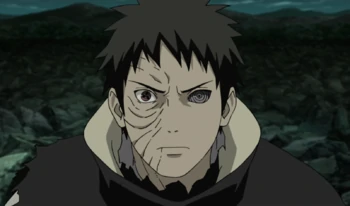

Madara Uchiha

Izuna Uchiha

Obito Uchiha
Shisui Uchiha
Itachi Uchiha

One Piece (ワンピース Wan Pīsu?) é uma série de mangá escrita e ilustrada por Eiichiro Oda. Os capítulos têm sido serializados na revista Weekly Shōnen Jump desde julho de 1997, com os capítulos compilados e publicados em 106 volumes tankōbon pela editora Shueisha até junho de 2023. One Piece conta as aventuras de Monkey D. Luffy, um jovem cujo corpo ganhou as propriedades de borracha após ter comido um fruto do diabo acidentalmente. Com sua tripulação, os Piratas do Chapéu de Palha, Luffy explora a Grand Line em busca do tesouro mais procurado do mundo, o "One Piece", a fim de se tornar o próximo Rei dos Piratas. One Piece atingiu a marca de mil capítulos publicados na Weekly Shonen Jump em janeiro de 2021, se tornando um dos raros mangás a ultrapassar tal marca
A série foca em Monkey D. Luffy, um jovem feito de borracha, que, inspirado em seu ídolo de infância, o poderoso pirata Shanks, o Ruivo, parte em uma jornada do mar do East Blue para encontrar o tesouro mítico, o One Piece, e proclamar-se o Rei dos Piratas.
Também conhecidas como Akuma no Mi, essas frutinhas dão poderes quando ingeridas. As Frutas do Diabo são elementos cruciais para o enredo de One Piece. Também conhecidas como Akuma no Mi, em japonês, essas frutinhas dão poderes para aqueles que as ingerem.
10 - Recorde Desde 1997, cada capítulo de One Piece leva os leitores a novas aventuras épicas com a Tripulação do Chapéu de Palha. Com batalha incríveis, um excelente desenvolvimento de personagens e locais extremamente criativos, o autor Eiichiro Oda criou uma série viciante para fãs de todo o mundo. Na verdade, One Piece fez tanto sucesso que se tornou o mangá mais vendido de todos os tempos. Pois é! O Guinness, o Livro dos Recordes reconheceu Oda pelo "maior número de cópias publicadas para uma mesma série em quadrinhos por um único autor" em 2014. Na época do reconhecimento, One Piece havia vendido 320 milhões de unidades entre dezembro de 1997 e dezembro de 2014. Hoje, as vendas do mangá ultrapassam as 490 milhões de cópias em todo o mundo. 9 - Duração A jornada dos Piratas do Chapéu de Palha é a obra de vida de Eiichiro Oda. Seu compromisso em criar ele mesmo a maior parte da arte o levou a uma programação muito exigente. Em entrevista ao site Kotaku, Oda afirmou que acorda às 5h da manhã e trabalha até às 2h. Pois é, ele dorme menos de 3 horas por dia, além de não ter férias! Essa é uma grande mudança em relação aos planos iniciais de Oda para o mangá. No passado, ele já revelou que seus planos eram de que o mangá durasse apenas cinco anos, terminando em 2002. No entanto, à medida que ele continuava a desenvolver mais personagens, batalhas e aventuras, a história ganhou vida própria. Mas em recentes entrevistas, quando perguntado sobre o final da obra, Oda garante que One Piece já está de 75% a 80% concluído. Falta pouco! Ou não. 8 - Oda se tornou mangaká para evitar "um emprego de verdade" Muitos artistas de quadrinhos e mangás começaram suas carreiras por causa de sua paixão pelo desenho e pela narrativa das histórias. Embora suas carreiras possam não começar em seu campo preferido, eles logo encontram o caminho para a ocupação que amam. Para o autor Eiichiro Oda, entretanto, ser um mangaká foi sua única opção na vida. De acordo com uma entrevista no One Piece Blue: Grand Data File, Oda afirmou que queria se tornar um artista de mangá aos 4 anos para evitar ter que conseguir um "emprego de verdade". Cumprindo seu sonho, Oda desenvolveu suas habilidades ao longo dos anos e criou várias séries no final da adolescência. Sua primeira série, Wanted!, recebeu vários prêmios e ficou em segundo lugar no Prêmio Tezuka semestral de mangá. Após esse reconhecimento, Oda conseguiu seu primeiro emprego na Weekly Shōnen Jump. 7 - Dragon Ball foi a maior inspiração de One Piece Enquanto crescia, Oda encontrou inspiração em muitos de seus desenhos e mangás de infância. Entre seus favoritos estava "Vicky, o Viking", uma série animada de televisão dos anos 1970 que despertou seu interesse por histórias de piratas. No entanto, em termos de mangá, Oda era um grande fã do autor Akira Toriyama e de seu trabalho, incluindo Dr. Slump e, é claro, Dragon Ball. Frequentemente citado como uma influência para muitos escritores de mangá conhecidos, incluindo o criador de Naruto, Masashi Kishimoto e o criador de Bleach, Tite Kubo, o protagonista de Dragon Ball , Goku, se tornou uma inspiração para Oda também. Desde que lançou One Piece em 1997, Oda se tornou um bom amigo de seu ídolo Toriyama e até colaboraram em projetos juntos. O mangá Cross Epoch de 2007 se tornou o primeiro crossover de One Piece e retratou os personagens de seu mundo combinados com o universo Dragon Ball. 6 - Romance Dawn Trabalhando na Weekly Shōnen Jump, Oda começou a desenvolver suas habilidades como um artista de mangá. Ele trabalhou como assistente nos mangás Suizan Police Gang, Jungle King Tar-chan e Mizu no Tomodachi Kappaman. Mas seu trabalho de maior renome como assistente foi em Rurouni Kenshin, de Nobuhiro Watsuki. Depois de trabalhar em vários projetos como assistente, Oda finalmente criou o one-shot "Romance Dawn". Um enredo no qual Oda havia trabalhado originalmente no ensino médio, essa história de 1996 já trazia o personagem Monkey D. Luffy como protagonista, com seu chapéu de palha característico e personalidade turbulenta. Quando Oda desenvolveu e publicou One Piece em 1997, ele manteve o nome "Romance Dawn" como uma homenagem às raízes da história. Esse ficou sendo o título do primeiro capítulo da série e do primeiro volume do mangá. 5 - Planos iniciais Como acontece com qualquer história em desenvolvimento, certos elementos da trama e mudanças de personagem ocorrem em seus estágios iniciais. No caso de One Piece, vários personagens foram desenhados em estilos que contrastam muito com seus visuais finais. Por exemplo, Chopper foi originalmente desenhado com uma aparência de rena mais realista e carregando uma espada! Outros personagens com origens variadas incluíam uma Nami mais mecanizada empunhando um enorme machado de batalha e o “Caçador de Piratas” Roronoa Zoro como guarda-costas dos Piratas Buggy. No entanto, um de seus planos de personagem teve que ser mudado devido a um mangá concorrente... 4 - Conflitos com Naruto Após o lançamento de "Romance Dawn", Oda trabalhou para desenvolver plenamente as aventuras de Monkey D. Luffy e sua tripulação. Embora tenha retido alguns elementos da história original, Oda também desenvolveu novos personagens. Um desses personagens era o cozinheiro conhecido como "Perna Negra" Sanji - bem, foi assim que ele acabou se chamando. Quando foi criado, Sanji era na verdade chamado de Naruto. No entanto, o rival de Oda, o criador de Naruto, Masashi Kishimoto, havia acabado de desenvolver sua série de mesmo nome e o publicou em 1997. Tendo ouvido falar de seu desenvolvimento, Oda decidiu mudar o nome de seu personagem para evitar confusão. Mesmo com essa suposta “rivalidade”, os dois artistas se respeitavam muito. Quando Kishimoto publicou seu volume final de Naruto, ele incluiu o símbolo dos Piratas do Chapéu de Palha na bandana de Naruto na Rocha Hokage. Como resposta, Oda adicionou uma homenagem a Naruto na capa do "Capítulo 766" de One Piece, onde ele e Luffy almoçam juntos. Luffy estava comendo lamen - a comida favorita de Naruto - enquanto Naruyo comia carne - a comida favorita de Luffy. 3 - Inspiração na literatura clássica Embora as primeiras inspirações de Oda tenham vindo de seus mangás e desenhos animados de infância, ele também encontrou inspiração na literatura clássica global. O projeto da prisão da Marinha, "Impel Down" espelha fortemente os Nove Círculos do Inferno retratados no poema A Divina Comédia de Dante Alighieri do século 14. Ambas as estruturas representam vários graus de tortura e punição com base na gravidade dos crimes de seus prisioneiros. O vilão e ex-senhor da guerra Donquixote Doflamingo tem conexões com Don Quixote de La Mancha, do escritor espanhol Miguel de Cervantes. Oda também se inspirou na mitologia grega com a inclusão das Amazonas e das irmãs Górgonas. Além disso, o irmão adotivo de Luffy e Ace, Sabo, tem seu visual inspirado no personagem Artful Dodger do clássico Oliver Twist de Charles Dickens. 2 - Referências a piratas históricos Os Piratas do Chapéu de Palha encontraram várias tripulações de piratas durante sua jornada. E muitos desses personagens foram baseados em piratas históricos da vida real. Mais notavelmente, a história de One Piece começou com a execução do infame Rei dos Piratas, Gold Roger, que no dia de sua execução, desafiou qualquer um a tentar descobrir seu precioso tesouro, o One Piece. Esta declaração e execução foram baseadas no pirata francês Olivier Levasseur. Em um gesto final, ele jogou seu colar contendo um criptograma no meio da multidão e avisou que quem o resolvesse acharia seu tesouro. Referências históricas adicionais incluem Edward Teach, também conhecido como Barba Negra - em One Piece, o personagem Barba Negra é Marshall D. Teach e seu rival Barba Branca é Edward Newgate. Além disso, piratas mulheres notáveis podem ser encontradas nas personagens Alvida (inspirada na pirata do século V Alwilda) e Jewelry Bonney (inspirada na pirata irlandesa Anne Bonny). 1 - Conexões com a cultura pop Ao longo dos anos, a inspiração de Oda veio de muitas fontes diferentes. Embora influenciado por figuras históricas e clássicos da literatura, ele também conseguiu incorporar aspectos da cultura pop. Uma das homenagens mais facilmente reconhecidas em One Piece pode ser encontrada no personagem Emporio Ivankov. Não há como negar que a aparência e maneirismos de Ivankov são um reflexo direto do personagem Dr. Frank-N-Furter de Tim Curry do clássico cult Rocky Horror Picture Show. Oda listou Tim Burton e Quentin Tarantino entre seus diretores favoritos e "O Estranho Mundo de Jack" como um de seus filmes favoritos. Os aspectos mais assustadores de Burton e de seu trabalho podem ser vistos no arco Thriller Bark. Além disso, o uso de zumbis e “Thriller” no título dessa saga provavelmente se conecta ao videoclipe Thriller de Michael Jackson. Na verdade, seria impossível elencar aqui todos as inspirações de Oda em sua obra quando estamos falando de cultura pop. De músicos a líderes mundiais, é uma lista imensa!
Madara Uchiha foi o primeiro a desenvolver uma forma avançada do Sharingan, o Mangekyō Sharingan, que é ativado através da perda de uma pessoa querida. No entanto, o uso freqüente do Mangekyō Sharingan deteriora a visão do usuário e resulta em cegueira. Apenas tomando os olhos de um irmão que a visão pode ser restaurada, um processo que resulta na criação de um Eterno Mangekyō Sharingan (永遠の万華鏡写輪眼, Eien no Mangekyō Sharingan ). Itachi indicou que as complexidades do Mangekyō Sharingan só foram descobertas depois de décadas de tentativas e erros, o que implica que muitos ao longo da história do clã Uchiha tinham feito a tentativa de ganhar o Mangekyō Sharingan. Um membro do clã, Madara, conseguiu despertar o Rinnegan. Depois de ter integrado o DNA Senju em seu corpo, ele observou que o dōjutsu não apareceu até que ele foi se aproximando do fim de sua vida natural.
Anos mais tarde, depois do ataque da Kurama em Konoha, Konoha começou a suspeitar que os Uchiha estavam por trás do ataque por causa de sua capacidade de controlar a Nove-Caudas com seu Sharingan. Tobi afirma que o clã foi forçado a viver em um canto da aldeia, banido do resto da comunidade, e colocada sob vigilância pesada. Isso deu origem a descriminação com o clã e os Uchiha interpretaram isso como uma confirmação do que Madara havia advertido-os anos atrás , e começaram a planejar derrubar a vila. Itachi discordou do golpe de Estado, e informou a liderança de Konoha do que os Uchiha estavam fazendo. Shisui Uchiha, que tinha sido dito para manter os olhos em seu melhor amigo Itachi, também discordou do plano do clã e se juntou a Itachi em sua missão de colocar um fim a isso. Ele tentou utilizar a capacidade de seu Mangekyō Sharingan: Kotoamatsukami para detê-los, mas, mais uma vez, Danzō, determinado em proteger a vila da única maneira que ele via que era possível, roubou olho direito de Shisui. Depois disso, Shisui e Itachi se reuniram tristes já que eles não conseguiram parar o clã, Shisui deu a Itachi seu olho esquerdo antes que Danzō tentasse pegá-lo também, dizendo-lhe para proteger a vila e o nome dos Uchiha. O Terceiro Hokage, Hiruzen Sarutobi que havia discordado sobre o tratamento que os Uchiha estavam recebendo, tentou negociar com uma solução mais pacífica, mas como o tempo passou, a estratégia parecia estar ficando cada vez mais inútil, Danzō tomou o assunto em suas próprias mãos e induziu Itachi para cometer o genocídio com a ameaça de ações de seu clã, criando mais as crianças de guerra e inocentes, como seu irmão mais novo, tornando-se uma vítima.
Dentro de uma noite, todo o clã foi abatido com um único Uchiha deixado vivo: o irmão mais novo de Itachi, Sasuke. Sasuke iria passar os próximos anos de sua vida tentando vingar sua família e querendo matar Itachi, algo que Itachi tinha planejado desde o início. Depois de realizar este objetivo, Sasuke soube da existência de Tobi. Tobi, que é na verdade Obito Uchiha, outro sobrevivente do clã, que também era a pessoa por trás do ataque da Kyūbi, disse para Sasuke sobre a história dos Uchiha e por que Itachi havia dizimado eles, levando Sasuke, com a ajuda de Tobi, à destruir Konoha. Mais tarde seria mostrado a verdade a Sasuke pelo próprio Itachi que foi reencarnado.